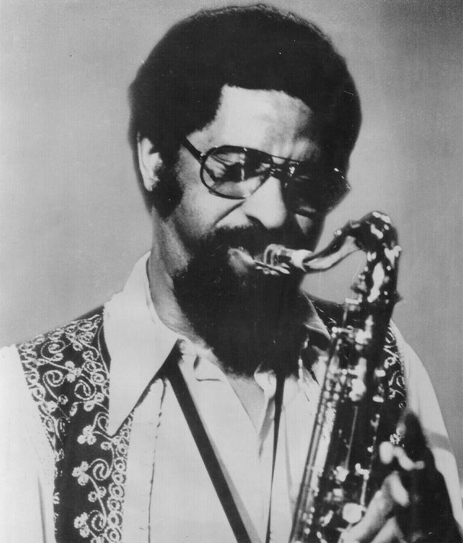
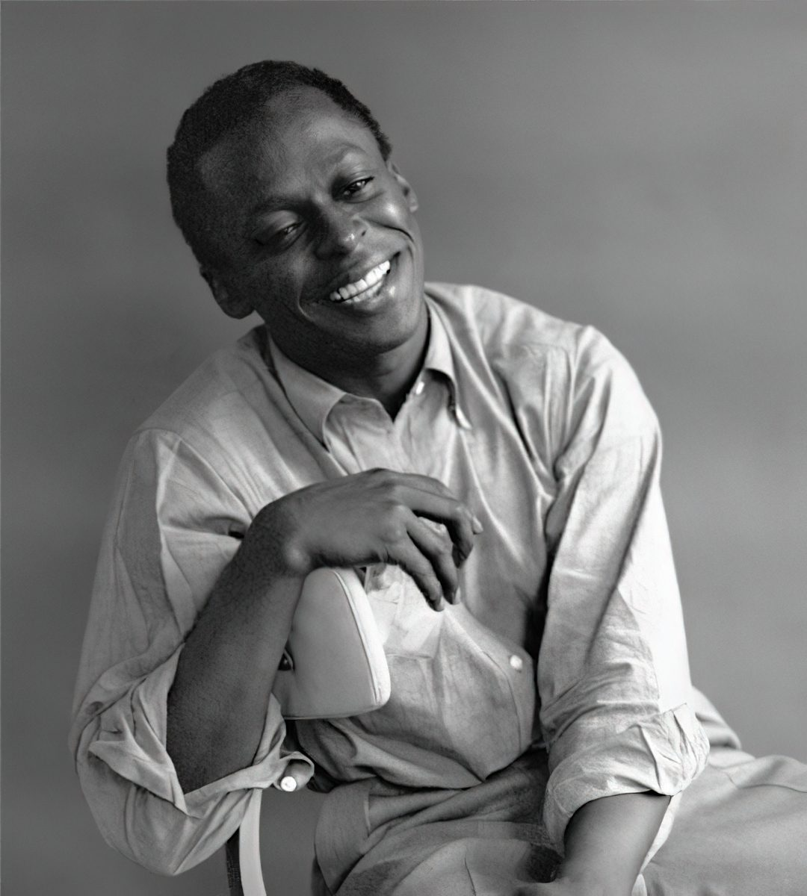
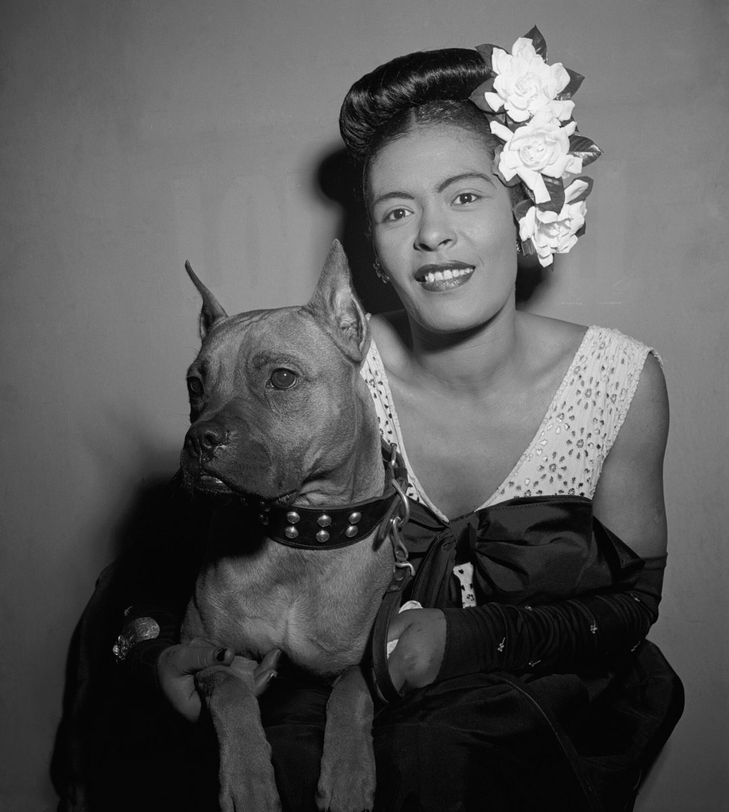
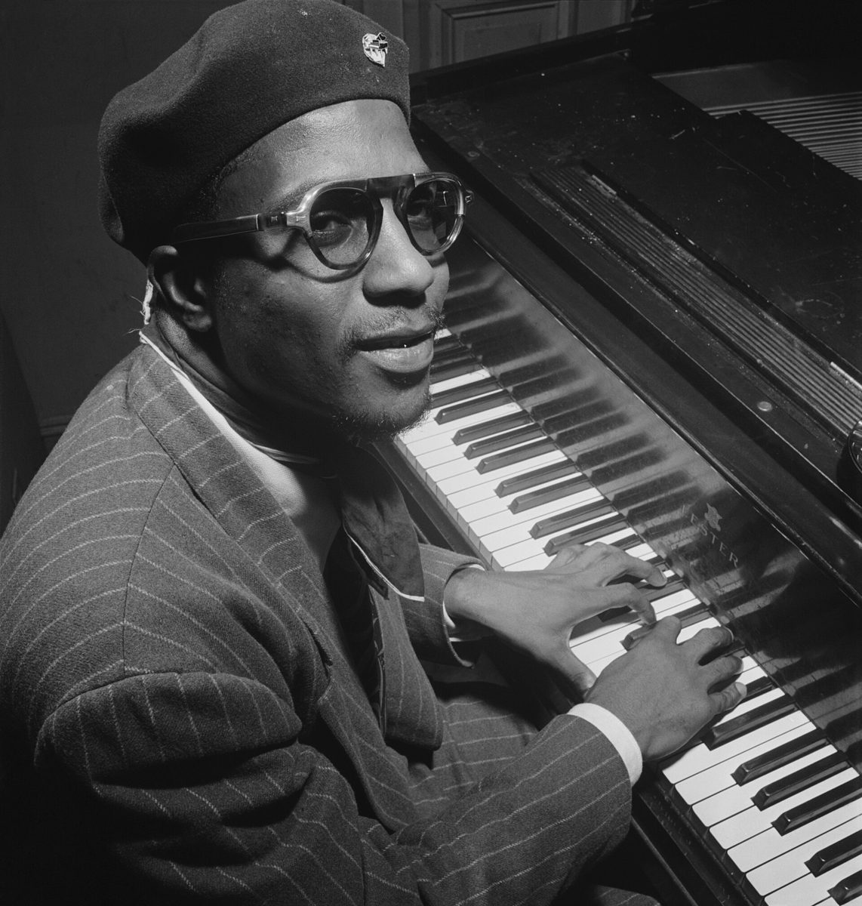
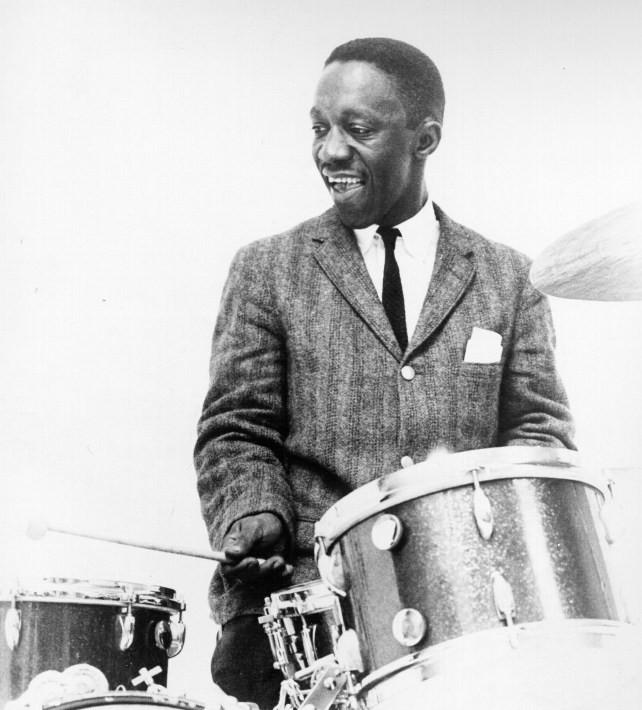

這次先讀這篇
一個星期天下午，三個人和一間地下室
1961 年 6 月 25 日，Bill Evans 三重奏在紐約 Village Vanguard 從下午彈到晚上。那天錄下的音樂成了兩張經典專輯，十一天後，貝斯手不在了。
讀這篇故事那些錄音室、俱樂部和唱片背後的故事，一篇講完，再告訴你該聽哪一段。
爵士樂最常聽到的和弦進行，用瀏覽器現場彈給你聽。
1961 年 6 月 25 日，Bill Evans 三重奏在紐約 Village Vanguard 從下午彈到晚上。那天錄下的音樂成了兩張經典專輯，十一天後，貝斯手不在了。
讀這篇故事依年份排列的人、晚上和唱片。每一篇都附上「這樣聽」。
1950 年代最好聽的爵士唱片，很多是在紐澤西一戶人家的客廳裡錄的。錄音師白天在幫人驗光。

1959 年，Sonny Rollins 正紅的時候突然不演出了。有人在紐約威廉斯堡大橋的步道上找到他，一個人對著東河吹薩克斯風。

1959 年春天，John Coltrane 在《Kind of Blue》裡吹得很慢。一個月後，他走進另一間錄音室，錄下一首快到鋼琴手跟不上的曲子。

1961 年 6 月 25 日，Bill Evans 三重奏在紐約 Village Vanguard 從下午彈到晚上。那天錄下的音樂成了兩張經典專輯，十一天後，貝斯手不在了。
全世界爵士樂手幾乎人手一本《Real Book》。它最早是幾個學生偷偷影印出來的，沒有版權，沒有作者名字。
1975 年 1 月，Keith Jarrett 在德國科隆歌劇院遇上一台不該上台的鋼琴。差一點取消的演出，最後賣了數百萬張。

十張唱片，一張比一張多一點東西。每張先聽一首就好。
同一段旋律，直的和搖擺的差在哪裡？十二小節藍調長什麼樣子？用瀏覽器現場彈給你聽。
兩個八分音符平均分，聽起來像進行曲；第一個拉長、第二個縮短，就開始搖了。
切換兩種，注意你的頭什麼時候開始想跟著點。
十二個小節為一輪，三組和弦反覆循環。幾乎所有爵士樂手都會彈。
跟著亮起來的格子數，第 5 小節和第 9 小節和弦會換，聽得出來嗎？
從紐奧良的街頭到今天。金色的點，這裡有完整的故事。
 1925Louis Armstrong 的 Hot Five
1925Louis Armstrong 的 Hot Five 1927Duke Ellington 進駐 Cotton Club1935搖擺時代開始1938爵士進了卡內基音樂廳1939Blue Note 成立
1927Duke Ellington 進駐 Cotton Club1935搖擺時代開始1938爵士進了卡內基音樂廳1939Blue Note 成立 1940sbebop 誕生
1940sbebop 誕生
1949酷派爵士1953客廳裡的錄音室1954第一屆新港爵士音樂節1956Saxophone Colossus1959爵士最豐收的一年1961Village Vanguard 的星期天1962巴薩諾瓦來了1965A Love Supreme1970Bitches Brew1970sReal Book 出現1975科隆的那一晚1987國家珍寶2004Real Book 合法了每個人一句話、一首歌。




幾張唱片、一本書、一副能聽見貝斯的耳機。
如果只買一張，就是這張。
小說家寫他最愛的爵士樂手，一人一篇，配上和田誠的插畫。
低音比耳塞清楚，通勤也能用。爵士的貝斯是一半的樂趣。
IG 上已經講過一分鐘版本，長篇陸續放上來。
電子報〈慢慢聽〉每期只講一張爵士唱片：那天在哪裡錄、台上是誰、你該聽哪一段。不用懂樂理，戴上耳機照著聽。
先追蹤 IG，電子報開放時通知你